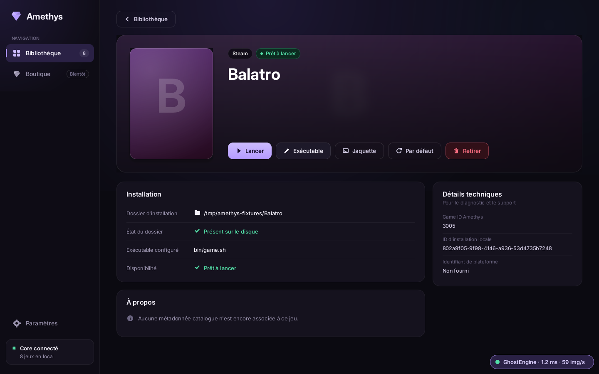

Your local library
Browse your games, search, filter by platform and open detailed game pages.
Steam, other launchers, games installed directly on your PC… Amethys aims to bring them all together in a library you control.
Version 0.2.0 available · Development preview · Work in progress
These screenshots are taken directly from desktop version 0.2.0. They show what is actually included in this preview — not concept screens made for a promo.
Browse your games, search, filter by platform and open detailed game pages.

See game information and the actions available for each title.

A look at the ongoing work on the catalogue and game discovery.
La 0.2.0 est la première preview publiée avec une interface graphique. Elle permet de gérer une bibliothèque locale, de découvrir certaines installations et de lancer les jeux configurés. Ce n'est pas encore un launcher complet : certaines intégrations et fonctions sont encore en développement.
Read the release notes ↗Les archives sont portables : ce ne sont pas des installateurs. Linux a passé la validation automatisée, mais n'a pas encore été testé manuellement sur une machine Linux physique. macOS n'est pas pris en charge à ce stade.
On préfère expliquer clairement l'état du projet plutôt que de présenter chaque idée comme une fonctionnalité déjà disponible.
Game downloads, installation, updates and repair are not functional deliverables for 0.3. They will depend on capabilities officially permitted by each platform. Amethys accounts and cloud sync are planned for a later stage.
Le problème est simple : chaque plateforme a sa bibliothèque, son application et ses habitudes. Quand on joue sur plusieurs services, on finit par passer plus de temps à chercher où se trouve un jeu qu'à le lancer.
Amethys aims to provide a common layer across those libraries. It is not a competing store, it does not take ownership of your licences, and it will not bypass publishers’ rules.
Payments, licences and refunds remain with the official stores.
Integrations must use APIs and mechanisms approved by each platform.
Your local library is managed on your machine. The goal is also to avoid keeping several launchers running when they are not needed.
Les intégrations profondes viendront avec les accords nécessaires, pas en prétendant disposer d'un accès qui n'existe pas.
Amethys est développé en Rust. The app desktop est séparée du Core : les données de bibliothèque et les opérations restent côté services, tandis que l'interface communique avec eux au moyen d'un protocole IPC versionné.
Cette séparation doit permettre de faire évoluer l'interface, le catalogue et les intégrations sans transformer le launcher en un bloc impossible à maintenir.
Agent, configuration, events, SQLite database and IPC protocol.
User interface, library and local interactions.
Public catalogue kept separate from private data stored on each PC.
Support for each platform depends on its available interfaces, permissions and agreements.
Browse releases, changes and known issues, or try the 0.2.0 preview.